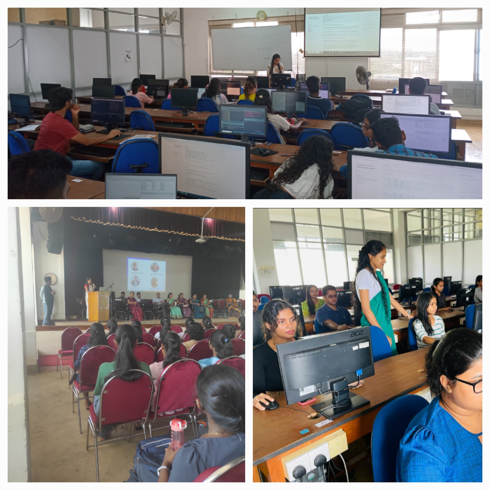
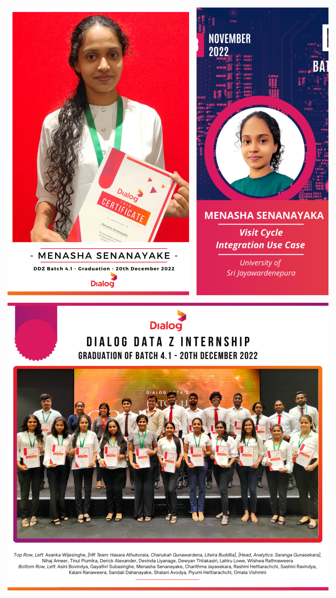

Experience
Assistant Lecturer (August 2024 - Present)
Department of Mathematics, Faculty of Applied Sciences, University of Sri Jayewardenepura
Academic Year 2025/26 | Semester I
AMT 112 2.0 Mathematical Statistics I | Course Outline
AMT 212 2.0 Mathematical Statistics II | Course Outline
MAN 103 1.0 Methods of Operational Research | Course Outline
Academic Year 2024/25 | Semester II
AMT 325 2.0 Regression Analysis | Course Outline
AMT 377 2.0 Computational Statistics | Course Outline
MAN 128 1.0 Introduction to Statistics | Course Outline
Final Year Undergraduate Research Project Supervision
- Co-supervised final year undergraduate research projects of the BSc (Honours) in Applied Sciences (Applied Mathematics) titled “Predicting the Impact of Tunnel Excavation on Groundwater Levels in Wells - A Machine Learning Approach”.
- Providing statistical guidance for the final year undergraduate research and industry collaboration projects.

Visiting Lecturer (May 2024 - Present)
Institute of Applied Statistics Sri Lanka (IASSL)
Certificate in Applied Statistics
- CAS 105 1.0 Introduction to Statistical Modeling | Course Outline
Research Project Supervision
- Supervised a Higher Diploma in Applied Statistics research projects titled “Predictive Model to Forecast Detection Probability: A Study in Air Surveillance Radars”.
Teaching Assistant (July 2023 - April 2024)
Department of Statistics, Faculty of Applied Sciences, University of Sri Jayewardenepura
Academic Year 2023/24 | Semester I and II
Conducted tutorial classes and computer practical sessions for the following course units:
- STA 113 2.0 Descriptive Statistics
- STA 114 2.0 Probability and Distribution Theory I
- STA 124 2.0 Data Analysis I
- STA 215 2.0 Sampling Techniques
- STA 226 1.0 Data Analysis II
- STA 326 2.0 Programming and Data Analysis with R
- STA 330 2.0 Data Analysis and Preparation of Reports
- STA 499 2.0 Statistical Methods

Statistical Consultant (January 2023 - April 2024)
Statistical Consultancy Service, Department of Statistics, Faculty of Applied Sciences, University of Sri Jayewardenepura
Statistical Consultancy Projects
The client who was pursuing the MPhil needed to identify the plant assemblage in the wetland and its relationship with water quality and soil quality. One way ANOVA models were used to find the effect of vegetation type on each water quality parameter. Next the MANOVA model was used to find the effect of vegetation type on water quality and soil quality parameters collectively. Finally, the tukey test was used to find the significantly different vegetation types for each variable. A report containing the methodology, outputs and interpretations was delivered.
The client wanted to determine the characterization of phytochemical composition, antioxidant and anti-inflammatory properties of aerial roots of Ficus benghalensis. Statistical analysis was done and a report containing the methodology, outputs and interpretations was delivered.
The client from the Department of Mathematics mainly expected to analyze the final grade against attendance in the MAT 211 1.0 Linear Algebra II course unit. They provided the mid exam marks, final exam marks and attendance of the students. Exploratory data analysis and creation of a dashboard was done and delivered to the client.
The project from a postgraduate client. The purpose was to visualize the Dengue hotspots and maps from the provided shapefiles. The initial dengue hotspot visualization and a report for Dengue hotspot Visualization were created. Provided guidelines to be followed when shapefiles with matching coordinate systems are available and provided a reusable code to be used in the analysis.
The project submitted by a client from the Department of Food Science and Technology, Faculty of Applied Sciences, University of Sri Jayewardenepura. Consulted the client on the descriptive analysis of data, data modeling and model fitting and interpretation of the statistical outputs. Created and delivered an R function for the needed statistical data analysis. Providing interpretations for the outputs taken and delivered to the client along with the reasons.
Intern - Data Analyst (July 2022 - December 2022)
Analytics Group, Dialog Axiata PLC.
Worked as an intern data analyst in Analytics Group as a part of the retailer analytics team and worked on improving and operationalizing AI factory ML models.

Volunteering - Experiences
- Member (April 2025 - Present)
Academic training committee
Institute of Applied Statistics Sri Lanka (IASSL) - Member and Editorial Assistant (April 2025 - September 2025)
Editorial board for the year 2025
Institute of Applied Statistics Sri Lanka (IASSL) and Sri Lanka Journal of Applied Statistics (SLJAS) - Editorial Assistant (January 2025 - April 2025)
Best Research Awards 2024
Institute of Applied Statistics Sri Lanka (IASSL) - Editorial Assistant (August 2024 - December 2024)
International Statistics Conference 2024 (ISC 2024)
Conference done in collaboration with Department of Statistics, University of Sri Jayewardenepura, Sri Lanka, Simon Fraser University, Canada and Institute of Applied Statistics Sri Lanka. - Examiner (November 2023 - December 2023)
The 10th National Statistics Olympiad 2023
Institute of Applied Statistics Sri Lanka (IASSL)